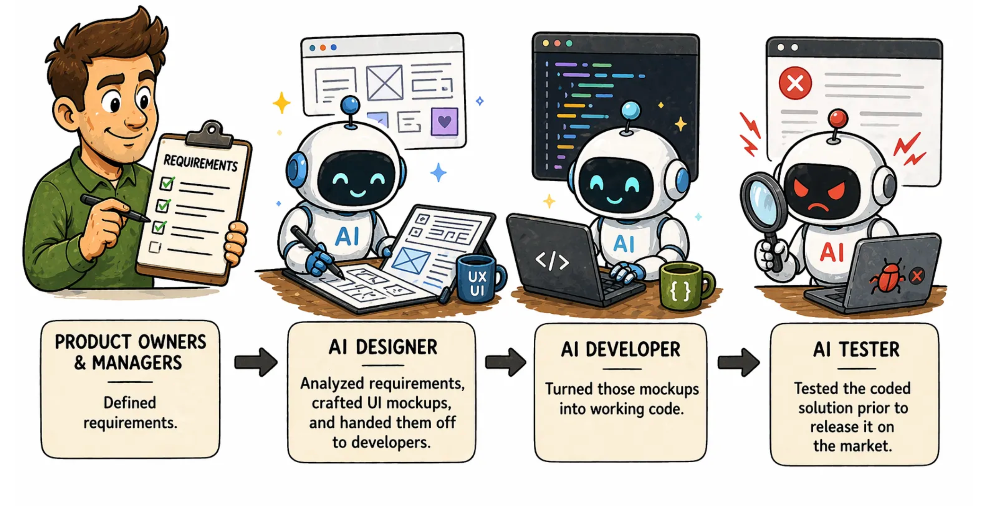
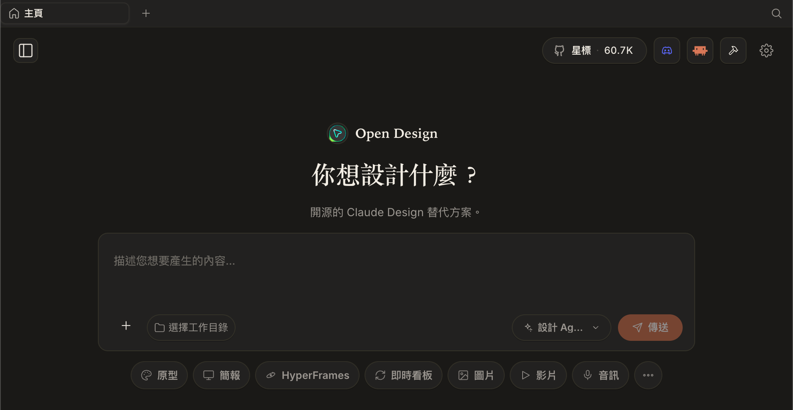
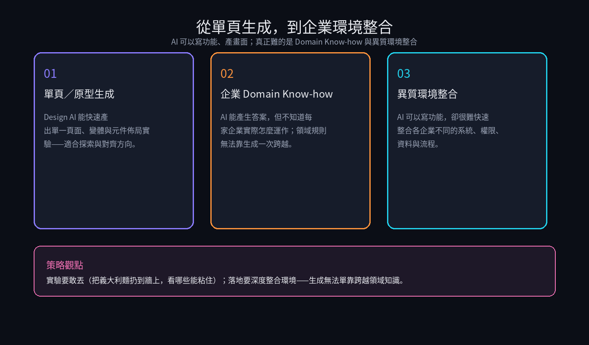
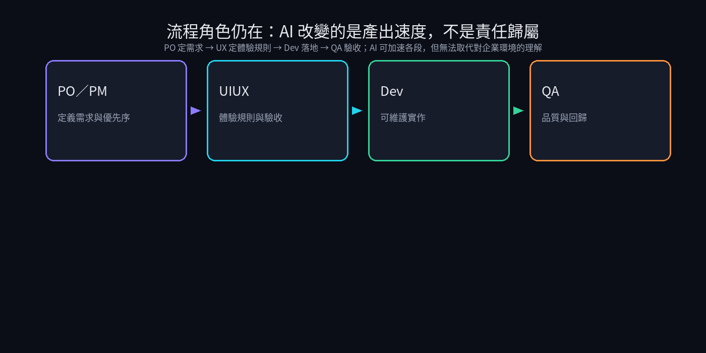

問題
Design AI 能快速產出單頁與變體，但企業實際運作方式（Domain Know-how）與各家異質系統環境，無法靠一次生成跨越。
解法
並行探索工具鏈做實驗驗證；同時強調產品策略上要深度整合企業環境，並保留 PO→UX→Dev→QA 的責任鏈。
成果
形成觀點：實驗要敢丟，落地要整合環境——生成無法單靠跨越領域知識。
- 整理 Design AI／Coding Agent 等工具試用觀察（名稱可作工具標籤，非客戶名）
- 釐清單頁生成與企業落地的落差：Domain Know-how、異質環境整合
- 形成對 AI 產品設計的策略觀點：實驗要敢丟，落地要整合環境
視覺敘事




